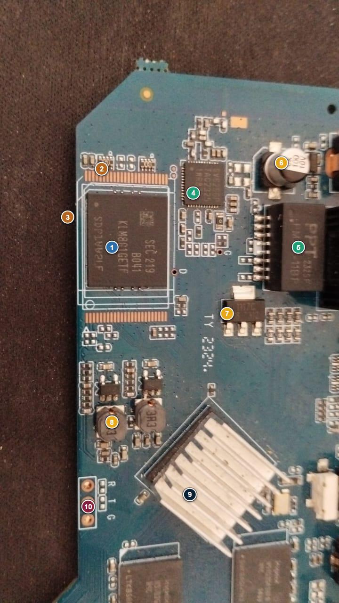
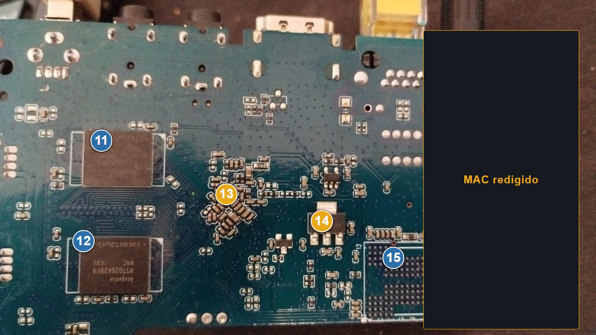
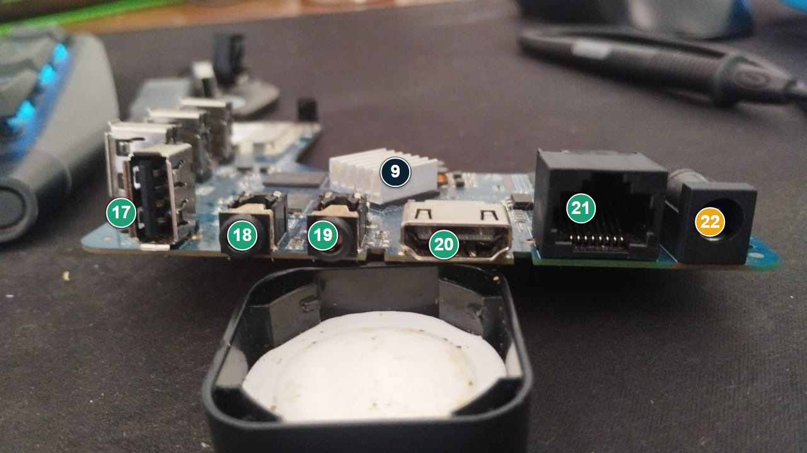
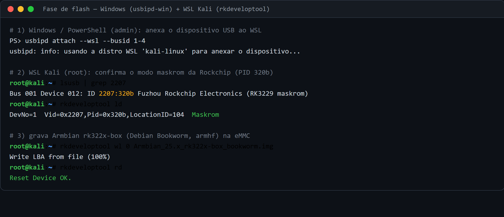
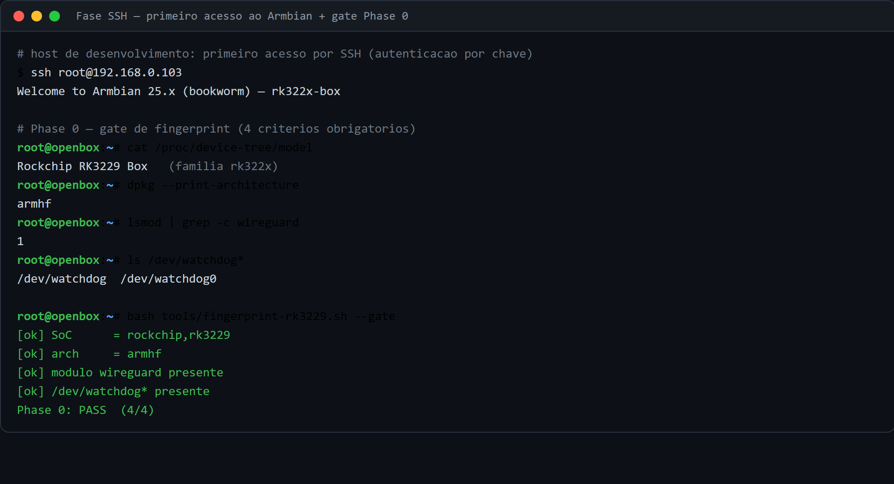

Documentação técnica derivada do repositório OpenBox0.1v, unindo a borda de rede
OpenBox — gateway de privacidade sobre Rockchip RK3229 (placa Shenzhen
R29_5G_LP3) — e o plano de detecção host-side ADV7Sec. O trabalho
integra história do projeto, análise de risco, procedimentos de instalação, hardening e validação
operacional, em uma arquitetura residencial defensiva orientada por evidência.
O OpenBox v0.2.0 é uma plataforma de borda open source retargetada para a
placa Shenzhen R29_5G_LP3, com SoC Rockchip RK3229, 1 GB LPDDR3 e Ethernet de
100 Mbps. A solução combina Armbian rk322x-box, WireGuard, nftables, dnscrypt-proxy, Pi-hole,
Unbound e Tor — este reservado a metadados — somados a um conjunto de monitores locais para
observabilidade contínua. A evolução do projeto priorizou correções factuais, verificabilidade e
mitigação realista de ameaças. O objetivo não é prometer anonimato total nem streaming via
Tor, mas reduzir risco, vazamento de DNS, exposição de metadados e impacto de backdoors de
cadeia de suprimento.
A disciplina Introdução à Computação exige a identificação de um problema real, a especificação de uma solução técnica e a documentação de suas limitações. No OpenBox, o problema assumido é particularmente concreto: dispositivos TV box genéricos, baratos e amplamente distribuídos podem sair de fábrica com firmware comprometido, serviços de telemetria não desejados e interfaces de administração frágeis. O projeto responde a esse cenário com uma arquitetura enxuta, auditável e executável em hardware reaproveitado.
A proposta se apoia em dois pilares. O primeiro é o OpenBox, a borda de rede: um gateway que controla a saída do tráfego, aplica políticas de DNS, mantém VPN com kill switch e segmenta a rede doméstica. O segundo é o ADV7Sec, um plano de controle orientado à detecção, que observa a estação de trabalho e agrega eventos de auditd, Falco, Suricata, Zeek e verificadores de integridade. Os dois elementos se complementam e transformam a casa em um laboratório de defesa realista.
| Objetivo | Descrição |
|---|---|
| Privacidade | Reduzir a observabilidade do ISP e de terceiros sobre tráfego e DNS. |
| Disponibilidade | Preservar a conectividade por meio de watchdogs e validações. |
| Integridade | Detectar alteração de arquivos críticos e comportamento anômalo. |
| Confiabilidade | Gerar documentação reprodutível e verificável. |
O contexto do projeto é a convergência entre streaming doméstico, custo mensal elevado e um mercado clandestino de TV box que opera em larga escala. Em vez de tratar a privacidade como abstração, o OpenBox parte do caso brasileiro: consumidores procuram alternativas mais baratas, marketplaces distribuem dispositivos sem garantia técnica e o ecossistema de malware explora exatamente essa cadeia de confiança frágil.
O projeto também responde a uma lacuna didática. Em muitos trabalhos acadêmicos, “segurança” aparece apenas como firewall ou antivírus. Aqui, a segurança é tratada de forma sistêmica: hardware, sistema operacional, rede, monitoramento, atualização, integridade e resposta a falhas. Isso aproxima a sala de aula do que efetivamente acontece em ambientes residenciais e em pequenas infraestruturas de borda.
cliente → OpenBox → Internet,
com o ADV7Sec observando o host e contribuindo para a telemetria local. A borda concentra as decisões
de privacidade; o host concentra a detecção.
O OpenBox evoluiu a partir de uma base anterior de TVBox OSS e foi refinado em múltiplas etapas até atingir o formato atual. As versões iniciais consolidaram a ideia de uma caixa de borda com privacidade auditável; as versões posteriores corrigiram a documentação técnica, trocaram o alvo de hardware e incorporaram verificação estrutural do ambiente.
A transição de Raspberry Pi 4 para RK3229 não representou retrocesso. Pelo contrário: o objetivo era provar que um dispositivo de baixo custo e amplamente reaproveitável pode sustentar uma pilha de segurança honesta, desde que o escopo seja bem definido. A história do projeto também registra a integração do vault Obsidian e a geração automática de documentos derivados, o que reforça rastreabilidade e manutenção.
| Marco | Descrição |
|---|---|
| TVBox OSS v2 | Primeira versão técnica, com inconsistências corrigidas posteriormente. |
| OpenBox v0.1.0 | Skeleton com WireGuard, nftables, Pi-hole, dnscrypt-proxy e watchdogs. |
| OpenBox v0.2.0 | Retarget para RK3229 / Armbian rk322x-box e ajuste de mídia para Jellyfin. |
| ADV7Box | Consolidação em HTML+PDF com documentação expandida. |
| AVAL01-IC | Reformulação acadêmica orientada à rubrica de Introdução à Computação. |
O estudo de caso central do projeto é o MXQ Pro 5G 4K, um dos nomes genéricos mais comuns entre as TV boxes de baixo custo. A diversidade de SoCs, memórias e módulos Wi-Fi sob a mesma marca branca já é um problema: o comprador nem sempre sabe o que recebeu, o firmware pode variar entre lotes e a publicidade frequentemente infla capacidades que o hardware não entrega. O rótulo “5G” costuma referir-se apenas a uma promessa de Wi-Fi de 5 GHz, muitas vezes inexistente na placa real.
A importância acadêmica desse caso está na sobreposição entre problemas de computação básica e problemas de segurança. A partir do dispositivo, é possível discutir arquitetura ARM, bootchain, módulos de comunicação, desempenho, energia, armazenamento em eMMC e, sobretudo, o risco de firmware pré-infectado. O projeto formaliza esse risco como parte da cadeia de suprimento: o problema existe antes mesmo da primeira conexão à rede.
| Elemento | Observação |
|---|---|
| SoC | Rockchip RK3229 em placa R29_5G_LP3. |
| Memória | 1 GB LPDDR3, o que exige tuning conservador de buffer e watchdogs. |
| Ethernet | 100 Mbps, suficiente para o perfil de uso e coerente com o custo. |
| Firmware | Potencialmente comprometido de fábrica em determinados lotes. |
| Risco | Backdoor, OTA no primeiro boot, ADB aberto, alterações não autorizadas. |
docs/security/RK3229_THREAT_RESEARCH.md.
A arquitetura de rede do OpenBox prioriza uma fronteira clara entre o que é confiável e o que não é. A unidade de borda recebe o enlace do provedor, aplica a política de saída, força a resolução DNS por um encadeamento local e encaminha o tráfego de forma encapsulada. Em paralelo, a camada de auditoria observa o comportamento do host e coleta sinais de integridade, tráfego e eventos de sistema.
A topologia é compatível com uso doméstico e com pequenos laboratórios: um roteador de borda, um switch L2 com VLAN opcional, uma workstation Linux para análise e um segmento separado para dispositivos menos confiáveis, como TV boxes e IoT. O design evita complexidade desnecessária e, ao mesmo tempo, permite crescimento incremental.
| Etapa | Função |
|---|---|
| 1 | O cliente solicita resolução ou acesso. |
| 2 | O OpenBox intercepta o DNS e aplica a política. |
| 3 | O dnscrypt-proxy e o Unbound tratam a consulta. |
| 4 | O WireGuard encapsula o tráfego válido. |
| 5 | O nftables bloqueia o vazamento se a VPN cair. |
| 6 | O ADV7Sec coleta a telemetria e alerta. |
A demanda de hardware foi calibrada para permanecer abaixo de um orçamento doméstico razoável. O edge router pode ser um RK3229 reaproveitado ou um Raspberry Pi 4, mas a documentação final favorece o RK3229 por custo e aderência ao cenário observado. A workstation de monitoramento pode ser reaproveitada e não exige aquisição adicional, o que reforça o caráter sustentável do projeto.
| Componente | Especificação alvo | Custo aproximado |
|---|---|---|
| Edge router | RK3229 / 1 GB RAM / eMMC 8 GB / Ethernet 100 Mbps | R$ 180–350 |
| Workstation | Linux ≥ 6.8, 4 GB RAM ou mais | reaproveitado |
| Switch VLAN | L2 gerenciável para segmentação | R$ 140–200 |
| Cabeamento | Cat5e/6 + USB-Ethernet quando necessário | R$ 60–120 |
| Camada | Ferramentas |
|---|---|
| Rede | WireGuard, nftables, dnscrypt-proxy, Unbound, Pi-hole, Tor |
| Monitoramento | Netdata, Monit, Lynis, RKHunter, Uptime Kuma |
| Segurança | Fail2ban, AIDE, Suricata, Zeek, auditd, Falco |
| Mídia | Jellyfin, em substituição a opções sem suporte para armhf |
provedor → edge router (OpenBox) → switch L2/VLAN → segmentos (confiável e IoT/TV box),
com a workstation de análise (ADV7Sec) em segmento confiável. VLAN separa o que não é
confiável; a VPN é a única rota de saída; o DNS é resolvido localmente e cifrado.
O modelo de ameaça distingue o que o OpenBox mitiga do que ele não pretende resolver. ISP, ataques na LAN, telemetria proprietária e compromissos de integridade são tratados; adversários estatais com correlação global, acesso físico e compromisso do provedor de VPN permanecem fora do escopo principal. Essa delimitação é importante para evitar promessas irreais de anonimato absoluto.
A matriz de risco não é apenas classificatória; ela orienta a priorização de controles. Falhas de hardware, software e rede foram mantidas em categorias distintas para preservar a lógica da rubrica e permitir mitigação específica, em vez de respostas genéricas como “instalar antivírus” ou “tomar cuidado”.
| Falha | Categoria | Probabilidade | Impacto | Nota |
|---|---|---|---|---|
| Queima do gateway / falta de energia | Hardware | Média | Alta | Alto |
| Erro de configuração do firewall | Software | Média | Alta | Alto |
| Ataque DDoS ou interceptação de tráfego | Rede | Baixa | Muito alta | Alto |
| Vazamento de DNS | Rede | Baixa | Alta | Médio/Alto |
O plano de hardening consolida a arquitetura em controles concretos. No plano de rede, o
WireGuard é a única via de saída permitida; no plano de tráfego, o nftables atua como base de política
e mantém o kill switch de forma atômica (via fwmark 51820). O uso de
dnscrypt-proxy e Unbound reduz a superfície de observação e dificulta a manipulação de DNS por
terceiros.
No plano de sistema, o OpenBox adota verificações de integridade, endurecimento de SSH, segregação de serviços e atualização controlada. O plano reconhece limitações reais: o Tor não é usado para streaming HD/4K e o objetivo não é o anonimato total. Em vez disso, o Tor é reservado a metadados e consultas leves, em que o custo de latência é aceitável.
| Falha | Mitigação |
|---|---|
| Hardware | UPS, backup de configuração, retenção de imagem de recuperação e equipamento reserva. |
| Software | Git, rollback, validação de configuração e testes automatizados antes e depois da instalação. |
| Rede | Firewall, VLAN, VPN obrigatória, DNS criptografado e rate limiting. |
| Integridade | AIDE, RKHunter, logs e alertas por ntfy. |
O ADV7Sec complementa o OpenBox ao observar a workstation Linux, o que é útil quando a ameaça já passou da borda. Ele agrega eventos de auditd, Falco, Suricata e Zeek, normaliza a saída, gera alertas locais e fornece uma visão coerente de comportamento anômalo. Trata-se de um plano de controle de detecção, não de bloqueio ativo, o que simplifica a análise didática.
A implementação privilegia um modo preview-first: o sistema mostra o que seria feito antes de executar ações de impacto. Esse desenho favorece estudo, depuração e aprendizado, sem transformar a plataforma em uma caixa-preta que “faz coisas” sem explicação.
| Sensor | O que observa | Saída |
|---|---|---|
| auditd | Syscalls e alterações de arquivos sensíveis | Log estruturado |
| Falco | Comportamento de processos e rede | Alerta e JSON |
| Suricata | Assinaturas de rede | EVE JSON |
| Zeek | Sessões e metadados de conexão | conn.log |
| AIDE | Integridade de arquivos | Baseline / diff |
A qualidade operacional do OpenBox depende de uma rotina clara de verificação. O runbook define comandos rápidos para checar serviços, conexões, vazamento de DNS, circuito Tor e integridade geral. Em sistemas de segurança, a documentação operacional é parte da solução, porque reduz o tempo entre um sintoma e a correção.
| Checagem | Comando de referência |
|---|---|
| Estado geral | systemctl status wg-quick@wg0 tor dnscrypt-proxy pihole-FTL nftables netdata |
| IP de saída | curl -4 https://ifconfig.io |
| Circuito Tor | curl --socks5-hostname 127.0.0.1:9050 https://check.torproject.org/api/ip |
| DNS leak | openbox-dnsleak-check.sh |
| Hardening index | lynis audit system --quick --no-colors |
| Falha | Resposta prevista |
|---|---|
| Handshake travado | Reiniciar wg-quick@wg0 e verificar latest-handshakes. |
| DNSCrypt sem resposta | Verificar o bind em 127.0.0.1:5053 e o upstream do Pi-hole. |
| Painel Netdata não abre | Validar o Caddy, o reverse proxy e os logs locais. |
| Tor degradado | Reiniciar o serviço e inspecionar o circuito com nyx. |
A entrega acadêmica é acompanhada por documentação gerada e versionada. O repositório inclui README, changelog, documentação de ameaça, guia de setup de hardware, runbook, referências e o vault do Obsidian com mapas de conteúdo gerados automaticamente. Isso permite auditoria posterior e reduz a dependência de texto manual desconectado do projeto real.
Em vez de tratar documentos como anexos decorativos, o OpenBox os integra como parte da engenharia. Os artefatos textuais descrevem as fases de instalação, os arquivos de configuração e o caminho de verificação; as notas do vault mantêm a trilha de execução; e os scripts de build e validação preservam a reprodutibilidade.
| Artefato | Função |
|---|---|
README.md | Visão geral do projeto e diferenças em relação ao TVBox OSS. |
CHANGELOG.md | Histórico de mudanças entre as versões 0.1.0 e 0.2.0. |
THREAT_MODEL.md | Adversários, fronteiras de confiança e modos de falha. |
RK3229_THREAT_RESEARCH.md | Ameaças de cadeia de suprimento e mitigação. |
RUNBOOK.md | Operações diárias e troubleshooting. |
OBSIDIAN_VAULT.md | Integração do repositório como vault do Obsidian. |
O OpenBox v0.2.0 mostra que uma solução defensiva bem definida pode ser construída com hardware de baixo custo, software livre e disciplina metodológica. O valor do projeto está menos em prometer uma abstração de “segurança máxima” e mais em transformar práticas concretas — segmentar, observar, validar, bloquear e registrar — em uma rotina acessível e replicável.
No plano pessoal e profissional, o projeto aponta para a atuação em infraestrutura, redes e segurança da informação, com forte viés Blue Team. A combinação entre hardening, observabilidade, resposta a incidentes e documentação técnica é compatível com carreiras em SOC, administração de redes, segurança de sistemas e engenharia de plataformas. A base construída aqui pode evoluir para maior automação, análise de alertas e integração com ferramentas de inteligência local em semestres futuros.
| Categoria | Exemplos de referência |
|---|---|
| VPN | WireGuard whitepaper, guias de hardening, documentação de tuning. |
| Firewall | nftables, kill switch com fwmark, allowlist de endpoint. |
| DNS | Pi-hole, dnscrypt-proxy, DNSSEC e DoH/DoQ. |
| Monitoramento | Netdata, Monit, Lynis, RKHunter. |
| IDS/IPS | Suricata, Zeek, auditd, Falco. |
| Mídia | Jellyfin para armhf; Tor apenas para metadados. |
A bibliografia técnica do repositório já registra referências verificadas para as escolhas de rede, hardening, monitoramento e mídia. A integração desses materiais ao projeto garante que as decisões não são arbitrárias, mas derivadas de documentação e validação operacional.
| Requisito da AVFinal | Atendido em | Status |
|---|---|---|
| Definição de infraestrutura de redes | Seções 5 e 6 | ✓ |
| Exatamente 3 falhas (hardware, software, rede) | Seção 7 | ✓ |
| Plano de mitigação | Seção 8 | ✓ |
| Evidências de desenvolvimento | Seção 11 | ✓ |
| Parágrafo de área de atuação | Seção 12 | ✓ |
| Critérios de avaliação / rubrica | Estrutura incorporada ao raciocínio do documento | ✓ |
Este anexo resume a correspondência entre a rubrica e o documento final. O trabalho foi organizado para que cada requisito seja encontrável sem adivinhação e com um fluxo de leitura coerente.
Documento final gerado em ambiente local com base nos arquivos do projeto OpenBox0.1v, incluindo README, changelog, threat model, runbook, pesquisa de hardware e vault Obsidian.
Este anexo documenta a inspeção física da unidade real utilizada no projeto, identificando as
estruturas da placa e registrando a fase de gravação (flash) e o primeiro acesso por SSH.
A placa foi identificada pela serigrafia como R3290_V8.1 (data 2020.06.15, marca de
teste TY 2324), pertencente à família rk322x (RK3228A/B ou RK3229),
coberta pela imagem Armbian rk322x-box.
| Item | Valor observado |
|---|---|
| Serigrafia da placa | R3290_V8.1 · 2020.06.15 · marca de teste TY 2324 |
| Família / SoC | rk322x — Rockchip RK3229 (ARM Cortex-A7 quad), sob dissipador |
| Armazenamento | eMMC Samsung KLM8G1GETF — 8 GB (BGA-153) |
| Memória | 4× Hynix H5TQ2G43BFR (DDR3, 2 por face) ≈ 1 GB |
| Imagem alvo | Armbian community rk322x-box (Debian Bookworm, armhf) |
| # | Estrutura | Marcação / parte | Função |
|---|---|---|---|
| 1 | eMMC | Samsung KLM8G1GETF (SEC 219 B041) | Armazenamento principal — 8 GB eMMC 5.x |
| 2 | R-série | resistores em série | Tap/isolação no barramento da eMMC |
| 3 | Trilha CLK | breakout junto à eMMC | Ponto de short para entrar em maskrom (método B) |
| 4 | CI companion | QFN-44 (SVS6Z56F / TAC2121) | PHY/controlador de interface (provável) |
| 5 | PPT PM44-11BP | SOIC junto a RJ45/DC | MOSFET/driver de potência (provável) |
| 6 | Capacitor eletrolítico | CK 100 µF / 10 V | Filtro da entrada de energia |
| 7 | LDO | AMS1117 (1117C, SOT-223) | Regulador linear 3,3 V |
| 8 | Conversores buck | 2× indutor 3R3 (3,3 µH) | Trilhos de núcleo/DDR |
| 9 | SoC | Rockchip RK3229 (sob dissipador) | CPU ARM Cortex-A7 quad — família rk322x |
| 10 | Header serial | R / T / G (RX, TX, GND) | Console UART de depuração |
| 11–12 | DRAM | Hynix H5TQ2G43BFR (H9C) DDR3 | 4 chips (2 por face) ≈ 1 GB |
| 13 | Rede de resistores | face inferior | Terminação/strap do barramento DDR |
| 14 | LDO auxiliar | 1117 (face inferior) | Regulador secundário |
| 15 | Footprint BGA vazio | não populado | Posição alternativa de NAND/eMMC |
| 16 | Cristal/oscilador | — | Referência de clock (24/25 MHz) |
| 17 | USB-A | — | Porta host USB 2.0 |
| 18–19 | AV 3,5 mm | — | Saídas CVBS/áudio |
| 20 | HDMI | — | Saída de vídeo digital |
| 21 | RJ45 | — | Ethernet 10/100 |
| 22 | DC jack | — | Entrada de alimentação 5 V |
| — | Micro-USB OTG | topo | Porta usada para o flash via maskrom |
| — | Receptor IR · slot microSD/TF | frontal · lateral | Controle remoto · armazenamento removível |



O procedimento de gravação foi conduzido a partir do host de desenvolvimento (Windows + WSL Kali),
anexando o dispositivo USB com usbipd-win e gravando a imagem Armbian com
rkdeveloptool em modo maskrom (PID 2207:320b). Após o boot, o primeiro
acesso ocorreu por SSH com autenticação por chave, seguido do gate de fingerprint da
Fase 0 (SoC, arquitetura, módulo WireGuard e /dev/watchdog).
192.168.0.103 ·
Phase 0: PASS (4/4)), a partir do runbook e das notas de execução.

rkdeveloptool wl → rd.